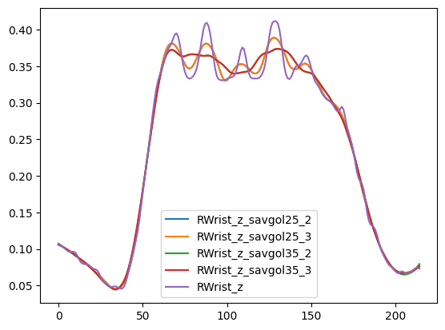
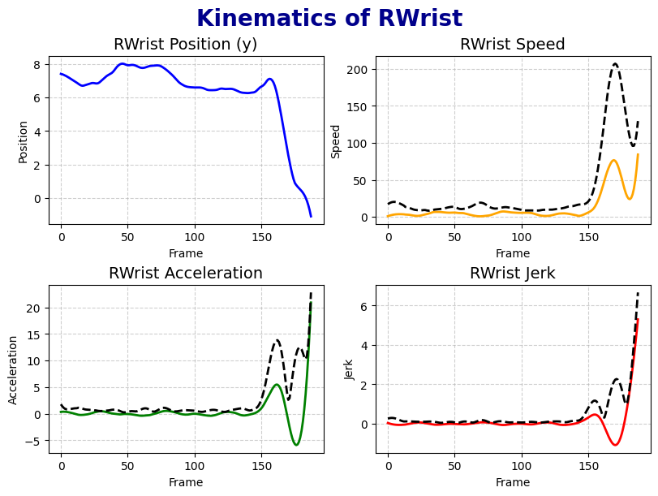
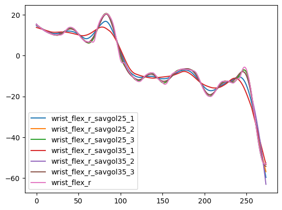
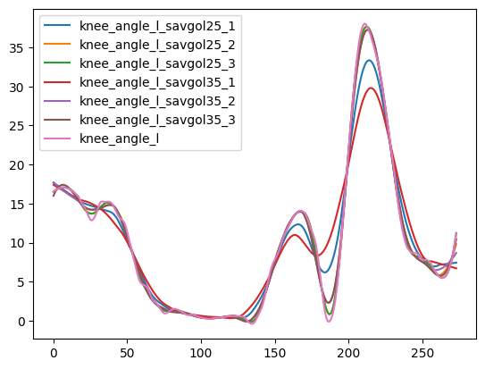
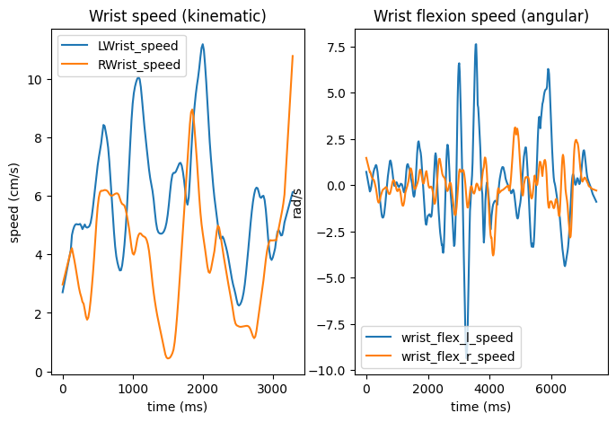
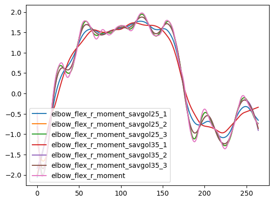
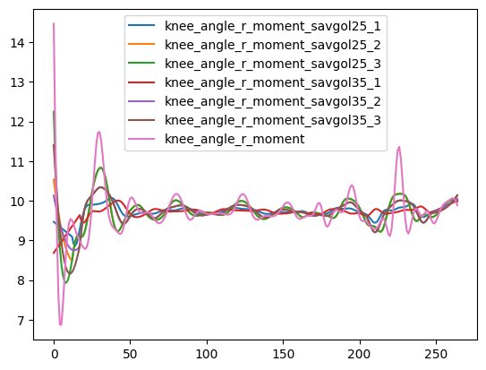
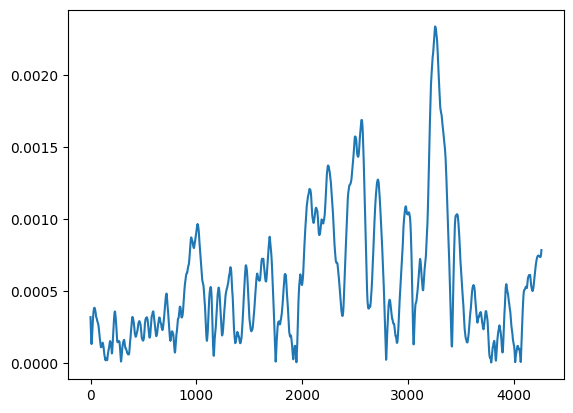

In the previous notebook, we have ran pose estimation on the trial videos using OpenPose, and triangulated the coordinates to get 3D coordinates for each trial using Pose2sim. Furthermore, we have performed inverse kinematics and dynamics to extract joint angles and moments using OpenSim.
In this script, we will clean the 3D coordinates and joint angle data, and extract further information (such as speed, acceleration, etc.).
Code to load packages and prepare the environment
# packagesimport osimport globimport numpy as npimport pandas as pdimport matplotlib.pyplot as pltimport scipyimport randomcurfolder = os.getcwd()# files to work withMTfolder = curfolder +'\\..\\02_MotionTracking_processing\\projectdata\\'## FLAGGED CHANGEBBfolder = curfolder +'\\..\\01_XDF_processing\\data\\Data_processed\\Data_trials\\'# folders to save the processed dataMTfolder_processed = curfolder +'\\TS_motiontracking\\'
Motion processing - kinematics
Here we use the keypoint coordinates estimated via OpenPose and triangulated via Pose2Sim. While Pose2sim does provide in-built filter, it is not particularly strong and the data can be still noisy.
To decide on the smoothing strength, we can use a custom function check_smooth_strength to check the effect of different smoothing strengths on the data.
Code to prepare files to process
MTtotrack = glob.glob(MTfolder +'*/P*/*', recursive=True)# get rid of all the folders that are not the ones we want to track, like .sto files## FLAG! why not do glob.glob(MTfolder + '*/P*/*butterworth*.csv', recursive=True)MTtotrack = [x for x in MTtotrack if'sto'notin x]MTtotrack = [x for x in MTtotrack if'txt'notin x]MTtotrack = [x for x in MTtotrack if'xml'notin x]MTtotrack = [x for x in MTtotrack if'opensim'notin x]MTtotrack = [x for x in MTtotrack if'Results'notin x]MTtotrack = [x for x in MTtotrack if'toml'notin x]print(MTtotrack[1:10])MTfiles_all = []for folder in MTtotrack:# last element is trialid trialid = folder.split('\\')[-1]# get all csv files in the folder csvfiles = glob.glob(folder +'\\**\\*.csv', recursive=True)# keep only the ones that have butterworth in the name - those are filtered with native Pose2sim function csvfiles = [x for x in csvfiles if'butterworth'in x] butterfile = csvfiles[0]# append to list with trialid MTfiles_all.append([trialid, butterfile])
# function to check different smoothing windows and ordersdef check_smooth_strength(df, windows, orders, keytoplot):# prepare new df df_smooth = pd.DataFrame()for win in windows:forordin orders: df_smooth[keytoplot +'_savgol'+str(win) +'_'+str(ord)] = scipy.signal.savgol_filter(df[keytoplot], win, ord)# make R_Hand_x from df_sample a list keytoplot_unsmoothed = df[keytoplot].tolist()# load these values into df_smooth as a new column df_smooth[keytoplot] = keytoplot_unsmoothed# plot keytoplot in all strngths colstoplot = [x for x in df_smooth.columns if keytoplot in x] plt.figure()for col in colstoplot: plt.plot(df_smooth[col], label=col) plt.legend() plt.show()
Here we can see a timeseries of vertical dimension of the left knee (note that pose2sim gave us y and z dimensions flipped, we will deal with this in a second). Each color represents the timeseries in different smoothed version, pink one is the raw signal (which is smoothed only with the Butterworth 10Hz cut-off filter). The first number in the legend corresponds to window length and the second number to polynomial order.
Here we can see different setting options for wrist.

Legs seem to be more noisy than arms. One reason could be that legs are more commonly covered by clothes, which can make the pose estimation more prone to errors. Also, legs often stay without movement, making them more sensitive to noise.
For that reason, we opt for different smoothing strengths for leg-related keypoints than for upper body.
For lower body positional data, we will use 2nd polynomial Savitzky-Golay filter with window of 816 ms.
For upper body positional data, 3rd order Savitzky-Golay filter with window of 400 ms seems to be a good choice. We will use it both for raw coordinates as well as for the derivatives.
Further, we obtain the first, second and third derivative of the timeseries, namely speed, acceleration, and jerk. For derivatives, we will use 3rd order Savitzky-Golay filter with window of 400 ms for both.
Lastly, to be able to work with timeseries that represent bigger segment of body than a single joint, we aggregate the kinematic derivatives for each body group (i.e., head, upperbody, arms, lowerbody) by computing euclidian sum over every derivative belonging to the group. This gives us, for instance, a measure for arm speed that represents a sum of speeds of all keypoints associated with the arm (i.e., wrist, elbow, shoulder, index)
Code with functions for processing kinematic data
# function to get euclidian sum of associated keypointsdef aggregate_keypoints(df, measurement, finalcolname, use):if use =='kinematics':# group keypoints that belong together lowerbodycols = ['RHip', 'LHip'] legcols = ['RKnee', 'RAnkle', 'LAnkle', 'LKnee', 'RHeel', 'LHeel'] headcols = ['Head', 'Neck', 'Nose'] armcols = ['RShoulder', 'RElbow', 'RWrist', 'LShoulder', 'LElbow', 'LWrist', 'RIndex', 'LIndex'] groups = [lowerbodycols, legcols, headcols, armcols]elif use =='angles': pelviscols = ['pelvis'] spinecols = ['L5_S1', 'L4_L5', 'L3_L4', 'L2_L3', 'L1_L2', 'L1_T12'] lowerbodycols = ['pelvis', 'hip'] legcols = ['knee', 'ankle', 'subtalar'] headcols = ['neck'] armcols = ['arm', 'elbow', 'wrist', 'pro_sup'] groups = [lowerbodycols, legcols, headcols, armcols, pelviscols, spinecols]# make subdf only with speed subdf = df[[x for x in df.columns if measurement in x]]# loop through each joint groupfor group in groups:# get cols cols = [x for x in subdf.columns ifany(y in x for y in group)] subdf_temp = subdf[cols]for index, row in subdf_temp.iterrows():# get all values of that row values = row.values# calculate euclidian sum euclidian_sum = np.sqrt(np.sum(np.square(values))) ## FLAGGED: possibly normalize# get a name for new colif group == lowerbodycols: colname ='lowerbody'elif group == legcols: colname ='leg'elif group == headcols: colname ='head'elif group == armcols: colname ='arm'elif group == pelviscols: colname ='pelvis'elif group == spinecols: colname ='spine' df.loc[index, colname + finalcolname] = euclidian_sumreturn df# get kinematic derivativesdef get_derivatives(df, sr, upperbodycols, lowerbodycols, use): mtcols = df.columnsif use =='kinematics':# get rid of cols that are not x, y or z mtcols = [x for x in mtcols if'_x'in x or'_y'in x or'_z'in x]# prepare cols for speed cols = [x.split('_')[0] for x in mtcols] colsforspeed =list(set(cols))# for each unique colname (cols), calculate speed for col in colsforspeed:# get x and y columns x = df[col +'_x'] y = df[col +'_y'] z = df[col +'_z'] # note that y and z are flipped# calculate speed speed = np.insert(np.sqrt(np.diff(x)**2+ np.diff(y)**2+ np.diff(z)**2),0,0)# multiply the values by sr, because now we have values in m/(s/sr) speed = speed*sr# smooth speed = scipy.signal.savgol_filter(speed, 25, 3)# if the col contains wrist, we will alco calculate the vertical velocity (z dimension)if'Wrist'in col: verticvel = np.insert(np.diff(z), 0, 0) verticvel = verticvel*sr verticvel = scipy.signal.savgol_filter(verticvel, 25, 3)# derive acceleration acceleration = np.insert(np.diff(speed), 0, 0) acceleration = scipy.signal.savgol_filter(acceleration, 25, 3)# derive jerk jerk = np.insert(np.diff(acceleration), 0, 0) jerk = scipy.signal.savgol_filter(jerk, 25, 3)# new_data new_data = pd.DataFrame({col +'_speed': speed, col +'_acc': acceleration, col +'_jerk': jerk}) df = pd.concat([df, new_data], axis=1)elif use =='angles':# get rid of cols that are not angles (so skip time) mtcols = mtcols[1:]# derive speedfor col in mtcols: speed = np.insert(np.diff(df[col]), 0, 0) speed = speed*sr speed = scipy.signal.savgol_filter(speed, 35, 1)# derive acceleration acceleration = np.insert(np.diff(speed), 0, 0) acceleration = scipy.signal.savgol_filter(acceleration, 35, 1)# derive jerk jerk = np.insert(np.diff(acceleration), 0, 0) jerk = scipy.signal.savgol_filter(jerk, 35, 1)# new_data new_data = pd.DataFrame({col +'_speed': speed, col +'_acc': acceleration, col +'_jerk': jerk}) df = pd.concat([df, new_data], axis=1)return df
# upper body colsupperbodycols = ['Head', 'Neck', 'RShoulder', 'RElbow', 'RWrist', 'LShoulder', 'LElbow', 'LWrist', 'Nose', 'RIndex', 'LIndex']# lower body colslowerbodycols = ['RHip', 'RKnee', 'RAnkle', 'RHeel', 'LHip', 'LKnee', 'LAnkle', 'LHeel']for folder in MTtotrack:# last element is trialid trialid = folder.split('\\')[-1]print('working on:'+ trialid)# get all csv files in the folder csvfiles = glob.glob(folder +'/**/*.csv', recursive=True)# keep only the ones that have butterworth in the name csvfiles = [x for x in csvfiles if'butterworth'in x] butterfile = csvfiles[0]# load it mt = pd.read_csv(butterfile)# the mt is missing 0 ms timepoint, so we need to create a row that copies the first row of mt and time = 0 padrow = mt.iloc[0].copy() padrow['Time'] =0# concatenate it to the beginning of mt mt = pd.concat([pd.DataFrame(padrow).T, mt], ignore_index=True)# keep only cols of interest colstokeep = ["Time", "RHip", "RKnee", "RAnkle", "RHeel", "LHip", "LKnee", "LAnkle", "LHeel", "Neck", "Head", "Nose", "RShoulder", "RElbow", "RWrist", "RIndex", "LShoulder", "LElbow", "LWrist","LIndex",] mt = mt[[col for col in mt.columns ifany(x in col for x in colstokeep)]]# flip y and z dimension as they are reversed from OpenPose/Pose2sim# if col has _y in it, replace it by _temp mt.columns = [x.replace('_y', '_temp') for x in mt.columns]# replace _z by _y mt.columns = [x.replace('_z', '_y') for x in mt.columns]# replace _temp by _z mt.columns = [x.replace('_temp', '_z') for x in mt.columns]####### SMOOTHING ####### smooth all columns except time with savgol mtcols = mt.columns colstosmooth = mtcols[:-1] mt_smooth = pd.DataFrame()for col in colstosmooth: colname = col.split('_')[0] # to get rid of _x, _y, _zif colname in upperbodycols: mt_smooth[col] = scipy.signal.savgol_filter(mt[col], 25, 3)elif colname in lowerbodycols: mt_smooth[col] = scipy.signal.savgol_filter(mt[col], 51, 2)# And put them all to cms mt_smooth = mt_smooth*100# add back time column mt_smooth['Time'] = mt['Time']# get sampling rate sr =1/np.mean(np.diff(mt['Time']))###### DERIVATIVES ####### get kinematic derivatives mt_smooth = get_derivatives(mt_smooth, sr, upperbodycols, lowerbodycols, 'kinematics')###### AGGREGATING ####### getting aggreagated sums for groups of cols mt_smooth = aggregate_keypoints(mt_smooth, 'speed', '_speedKin_sum', 'kinematics') mt_smooth = aggregate_keypoints(mt_smooth, 'acc', '_accKin_sum', 'kinematics') mt_smooth = aggregate_keypoints(mt_smooth, 'jerk', '_jerkKin_sum', 'kinematics')# add trialid mt_smooth['TrialID'] = trialid# convert time to ms mt_smooth['Time'] = mt_smooth['Time']*1000# write to csv mt_smooth.to_csv(MTfolder_processed +'/mt_'+ trialid +'.csv', index=False)
Here is an example of the file
RHip_x
RHip_z
RHip_y
RKnee_x
RKnee_z
RKnee_y
RAnkle_x
RAnkle_z
RAnkle_y
RHeel_x
...
arm_speedKin_sum
lowerbody_accKin_sum
leg_accKin_sum
head_accKin_sum
arm_accKin_sum
lowerbody_jerkKin_sum
leg_jerkKin_sum
head_jerkKin_sum
arm_jerkKin_sum
TrialID
0
12.186808
23.129494
1.692073
15.110699
22.532687
-38.543548
16.437185
22.694474
-74.834063
18.996019
...
26.083522
0.225640
0.590822
0.161665
1.651498
0.022804
0.046088
0.092108
0.341816
0_2_31_p1
1
12.195677
23.108011
1.675542
15.147758
22.574564
-38.544712
16.440867
22.691252
-74.855128
18.976731
...
23.961073
0.187954
0.502362
0.027073
1.414454
0.024985
0.058605
0.082632
0.300132
0_2_31_p1
2
12.204523
23.086249
1.660162
15.183910
22.615387
-38.545741
16.444388
22.688281
-74.874888
18.957985
...
22.197559
0.154021
0.417187
0.100069
1.315854
0.028136
0.068901
0.072654
0.261180
0_2_31_p1
3
12.213347
23.064209
1.645932
15.219154
22.655155
-38.546635
16.447747
22.685561
-74.893344
18.939780
...
20.747395
0.123840
0.335606
0.187785
1.297296
0.030733
0.076200
0.062197
0.224556
0_2_31_p1
4
12.222149
23.041892
1.632852
15.253492
22.693868
-38.547393
16.450944
22.683094
-74.910496
18.922118
...
19.573630
0.097610
0.258204
0.252369
1.303122
0.032213
0.080447
0.051345
0.190306
0_2_31_p1
5
12.230929
23.019295
1.620923
15.286921
22.731526
-38.548016
16.453979
22.680877
-74.926343
18.904998
...
18.646790
0.075868
0.186154
0.295498
1.297513
0.032427
0.081814
0.040245
0.159050
0_2_31_p1
6
12.239686
22.996421
1.610143
15.319444
22.768130
-38.548503
16.456853
22.678913
-74.940886
18.888420
...
17.942303
0.059671
0.122439
0.319353
1.262916
0.031396
0.080561
0.029151
0.132192
0_2_31_p1
7
12.248421
22.973268
1.600514
15.351059
22.803679
-38.548855
16.459565
22.677200
-74.954125
18.872383
...
17.436996
0.050448
0.077330
0.326231
1.193408
0.029216
0.076991
0.018637
0.112128
0_2_31_p1
8
12.257134
22.949838
1.592035
15.381767
22.838172
-38.549072
16.462115
22.675738
-74.966060
18.856889
...
17.105498
0.048612
0.076136
0.318539
1.089850
0.026020
0.071432
0.010923
0.101805
0_2_31_p1
9
12.265825
22.926129
1.584706
15.411567
22.871611
-38.549153
16.464503
22.674528
-74.976690
18.841937
...
16.917416
0.052072
0.111844
0.298855
0.957421
0.021964
0.064229
0.012538
0.102606
0_2_31_p1
10
12.274493
22.902141
1.578528
15.440461
22.903995
-38.549099
16.466730
22.673569
-74.986016
18.827527
...
16.835927
0.057658
0.155242
0.270077
0.805033
0.017219
0.055746
0.020884
0.112358
0_2_31_p1
11
12.283139
22.877876
1.573500
15.468446
22.935325
-38.548910
16.468795
22.672862
-74.994038
18.813659
...
16.817918
0.063030
0.196240
0.235745
0.646906
0.011987
0.046385
0.030254
0.126842
0_2_31_p1
12
12.291763
22.853332
1.569622
15.495525
22.965599
-38.548585
16.470699
22.672407
-75.000755
18.800334
...
16.815337
0.066837
0.231722
0.200699
0.508104
0.006598
0.036625
0.039232
0.142296
0_2_31_p1
13
12.300364
22.828510
1.566894
15.521696
22.994819
-38.548124
16.472440
22.672203
-75.006168
18.787550
...
14.656360
0.081540
0.284913
0.187160
0.383159
0.002108
0.025516
0.053032
0.173949
0_2_31_p1
14
12.308943
22.803410
1.565317
15.546960
23.022984
-38.547529
16.474020
22.672250
-75.010277
18.775308
...
15.012604
0.080498
0.279402
0.182591
0.443300
0.007590
0.018007
0.059507
0.170806
0_2_31_p1
15 rows × 128 columns
Let’s check one file to see how the data looks like by plotting RWrist and its kinematics, and also the euclidian sum for the whole arm along with it (as dashed black line)
Note that aggregates will always be directionless (i.e., in positive numbers) as they are squared when computed.

Motion processing - inverse kinematics
In the previous notebook, we have extracted joint angles using OpenSim (Seth et al. (26. 7. 2018)). Now again, we clean the data, smooth them, and extract further information before saving it into csv file per trial
We can once again check what would be the proper filter
Code to prepare environment
# get all mot files in the foldermot_files = glob.glob(MTfolder +'*/P*/*/*.mot', recursive=True)keypoints = ['wrist', 'pro_sup', 'elbow', 'arm', 'neck', 'subtalar', 'ankle', 'knee', 'hip', 'pelvis', 'L5_S1', 'L4_L5', 'L3_L4', 'L2_L3', 'L1_L2', 'L1_T12']

And for legs

We will apply a bit stronger filter of 1st order with span of 560 ms because the data are more noisy than the kinematics.
# get all mot files in the foldermot_files = glob.glob(MTfolder +'*/P*/*/*.mot', recursive=True)keypoints = ['wrist', 'pro_sup', 'elbow', 'arm', 'neck', 'subtalar', 'ankle', 'knee', 'hip', 'pelvis', 'L5_S1', 'L4_L5', 'L3_L4', 'L2_L3', 'L1_L2', 'L1_T12']for mot in mot_files:# get trialid trialid = mot.split('\\')[-1].split('.')[0]print('working on '+ trialid)# get rid of the first element before _ trialid ='_'.join(trialid.split('_')[1:])# load it mot_df = pd.read_csv(mot, sep='\t', skiprows=10)# pad 0 ms row padrow = mot_df.iloc[0].copy() padrow['time'] =0# concatenate it to the beginning of mot_df mot_df = pd.concat([pd.DataFrame(padrow).T, mot_df], ignore_index=True)# get the sr sr =1/np.mean(np.diff(mot_df['time']))##### SMOOTHING ####### smooth all columns except the firts time (time) and last (trialid) colstosmooth = [x for x in mot_df.columns if'time'notin x]# smoothfor col in colstosmooth: mot_df[col] = scipy.signal.savgol_filter(mot_df[col], 35, 1)# convert to radians mot_df[col] = np.deg2rad(mot_df[col])# keep only columns you might use coi = [x for x in mot_df.columns ifany(y in x for y in keypoints) or'time'in x or'TrialID'in x] mot_df2 = mot_df[coi]##### DERIVATIVES ####### get derivatives mot_df2 = get_derivatives(mot_df2, sr, [], [], 'angles')#### AGGREGATING ###### aggregate data mot_df2 = aggregate_keypoints(mot_df2, 'speed', '_angSpeed_sum', 'angles') mot_df2 = aggregate_keypoints(mot_df2, 'acc', '_angAcc_sum', 'angles') mot_df2 = aggregate_keypoints(mot_df2, 'jerk', '_angJerk_sum', 'angles')# add time and trialid mot_df2['time'] = mot_df['time']# convert time to ms mot_df2['time'] = mot_df2['time']*1000 mot_df2['TrialID'] = trialid# write to csv mot_df2.to_csv(MTfolder_processed +'/ik_'+ trialid +'.csv', index=False)
Here is an example file
time
pelvis_tilt
pelvis_list
pelvis_rotation
pelvis_tx
pelvis_ty
pelvis_tz
hip_flexion_r
hip_adduction_r
hip_rotation_r
...
arm_angAcc_sum
pelvis_angAcc_sum
spine_angAcc_sum
lowerbody_angJerk_sum
leg_angJerk_sum
head_angJerk_sum
arm_angJerk_sum
pelvis_angJerk_sum
spine_angJerk_sum
TrialID
0
0.000
-0.494779
1.465690
-1.092904
0.003865
0.002655
0.002283
0.088633
0.017501
-0.290667
...
0.030528
0.016054
0.002946
0.000372
0.000162
0.000206
0.000611
0.000305
0.000047
0_1_13_p1
1
16.667
-0.491722
1.464707
-1.094887
0.003866
0.002649
0.002285
0.087100
0.017773
-0.290882
...
0.030335
0.016026
0.002918
0.000340
0.000164
0.000205
0.000585
0.000274
0.000046
0_1_13_p1
2
33.333
-0.488665
1.463725
-1.096871
0.003868
0.002642
0.002288
0.085566
0.018045
-0.291098
...
0.030151
0.015998
0.002890
0.000309
0.000168
0.000204
0.000562
0.000243
0.000044
0_1_13_p1
3
50.000
-0.485609
1.462742
-1.098855
0.003870
0.002636
0.002290
0.084033
0.018318
-0.291313
...
0.029977
0.015971
0.002863
0.000281
0.000172
0.000204
0.000542
0.000214
0.000043
0_1_13_p1
4
66.667
-0.482552
1.461759
-1.100839
0.003872
0.002630
0.002293
0.082500
0.018590
-0.291528
...
0.029813
0.015944
0.002837
0.000256
0.000178
0.000203
0.000526
0.000186
0.000043
0_1_13_p1
5
83.333
-0.479495
1.460777
-1.102823
0.003874
0.002623
0.002295
0.080967
0.018862
-0.291743
...
0.029658
0.015919
0.002811
0.000235
0.000185
0.000202
0.000514
0.000160
0.000042
0_1_13_p1
6
100.000
-0.476438
1.459794
-1.104807
0.003876
0.002617
0.002298
0.079434
0.019134
-0.291958
...
0.029514
0.015894
0.002786
0.000219
0.000194
0.000202
0.000505
0.000136
0.000042
0_1_13_p1
7
116.667
-0.473381
1.458812
-1.106791
0.003878
0.002610
0.002300
0.077901
0.019407
-0.292173
...
0.029380
0.015870
0.002761
0.000209
0.000202
0.000201
0.000502
0.000118
0.000043
0_1_13_p1
8
133.333
-0.470325
1.457829
-1.108775
0.003880
0.002604
0.002303
0.076367
0.019679
-0.292388
...
0.029256
0.015847
0.002737
0.000206
0.000212
0.000200
0.000502
0.000108
0.000043
0_1_13_p1
9
150.000
-0.467268
1.456846
-1.110759
0.003882
0.002598
0.002305
0.074834
0.019951
-0.292603
...
0.029142
0.015824
0.002714
0.000211
0.000223
0.000200
0.000507
0.000107
0.000044
0_1_13_p1
10
166.667
-0.464211
1.455864
-1.112743
0.003883
0.002591
0.002308
0.073301
0.020223
-0.292818
...
0.029039
0.015802
0.002691
0.000223
0.000233
0.000199
0.000517
0.000116
0.000046
0_1_13_p1
11
183.333
-0.461154
1.454881
-1.114727
0.003885
0.002585
0.002310
0.071768
0.020496
-0.293033
...
0.028947
0.015782
0.002669
0.000240
0.000245
0.000198
0.000530
0.000132
0.000048
0_1_13_p1
12
200.000
-0.458098
1.453899
-1.116711
0.003887
0.002578
0.002313
0.070235
0.020768
-0.293248
...
0.028866
0.015761
0.002648
0.000262
0.000257
0.000198
0.000548
0.000155
0.000050
0_1_13_p1
13
216.667
-0.455041
1.452916
-1.118695
0.003889
0.002572
0.002316
0.068701
0.021040
-0.293463
...
0.028796
0.015742
0.002628
0.000288
0.000269
0.000197
0.000569
0.000181
0.000052
0_1_13_p1
14
233.333
-0.451984
1.451933
-1.120679
0.003891
0.002565
0.002318
0.067168
0.021312
-0.293678
...
0.028737
0.015724
0.002608
0.000317
0.000281
0.000196
0.000592
0.000208
0.000054
0_1_13_p1
15 rows × 240 columns
Here we can see the joint angle speed next to kinematic speed.

Motion processing - inverse dynamics
Now we do exactly the same also for inverse dynamics data (joint torques/moments).
Code to prepare environment
# in MTfolders, find all sto filessto_files = glob.glob(MTfolder +'*/P*/*/*.sto', recursive=True)sto_files = [x for x in sto_files if'ID'in x]
Let’s once again check the different smoothing strengths

And for legs

We will again reuse 1st order Savitzky-Golay filter with window of 560 ms for the moments and their first derivate (torque/moment change).
# in MTfolders, find all sto filessto_files = glob.glob(MTfolder +'*/P*/*/*.sto', recursive=True)sto_files = [x for x in sto_files if'ID'in x]for sto in sto_files:# from the filename, get the trialid trialid = sto.split('\\')[-1].split('.')[0] trialid ='_'.join(trialid.split('_')[:-1]) trialid ='_'.join(trialid.split('_')[1:])print('working on '+ trialid)# load it id_df = pd.read_csv(sto, sep='\t', skiprows=6)# pad 0 ms row padrow = id_df.iloc[0].copy() padrow['time'] =0# concatenate it to the beginning of id_df id_df = pd.concat([pd.DataFrame(padrow).T, id_df], ignore_index=True)##### SMOOTHING ###### smooth all columns except the firts time (time) and last (trialid) colstosmooth = [x for x in id_df.columns if'time'notin x] colstosmooth = [x for x in colstosmooth if'TrialID'notin x]# smoothfor col in colstosmooth: id_df[col] = scipy.signal.savgol_filter(id_df[col], 35, 1)##### AGGREGATING ###### get aggregated euclidian sum for each joint group id_df = aggregate_keypoints(id_df, 'moment', '_moment_sum', 'angles')#### TORQUE CHANGE ###### for each moment col, we will also calculate the change torquestodiff = [x for x in id_df.columns if'moment'in x]for col in torquestodiff: torquechange = np.abs(np.insert(np.diff(id_df[col]), 0, 0)) torquechange_smoothed = scipy.signal.savgol_filter(torquechange, 35, 1)# new data new_data = pd.DataFrame({col +'_change': torquechange_smoothed}) id_df = pd.concat([id_df, new_data], axis=1)# convert time to ms id_df['time'] = id_df['time']*1000# add trialid id_df['TrialID'] = trialid# write to csv id_df.to_csv(MTfolder_processed +'/id_'+ trialid +'.csv', index=False)
Here is an example file
time
pelvis_tilt_moment
pelvis_list_moment
pelvis_rotation_moment
pelvis_tx_force
pelvis_ty_force
pelvis_tz_force
hip_flexion_r_moment
hip_adduction_r_moment
hip_rotation_r_moment
...
wrist_dev_r_moment_change
wrist_flex_l_moment_change
wrist_dev_l_moment_change
lowerbody_moment_sum_change
leg_moment_sum_change
head_moment_sum_change
arm_moment_sum_change
pelvis_moment_sum_change
spine_moment_sum_change
TrialID
0
0.000
0.491035
55.218816
1.864887
8.991912
613.897817
8.243875
-42.179898
0.803486
1.159189
...
-0.000400
-0.000851
0.001524
0.251383
0.003900
0.047152
-0.023827
0.255015
-0.017313
0_2_96_p1
1
16.547
0.568692
54.981085
1.960780
8.479003
613.965803
7.845832
-42.124053
0.736541
1.167199
...
-0.000327
-0.000700
0.001662
0.245041
0.004395
0.047129
-0.020931
0.248606
-0.012716
0_2_96_p1
2
33.213
0.646350
54.743353
2.056672
7.966094
614.033789
7.447790
-42.068208
0.669597
1.175208
...
-0.000254
-0.000549
0.001800
0.238700
0.004890
0.047106
-0.018034
0.242197
-0.008119
0_2_96_p1
3
49.879
0.724007
54.505622
2.152564
7.453185
614.101775
7.049747
-42.012363
0.602652
1.183218
...
-0.000181
-0.000397
0.001938
0.232359
0.005385
0.047083
-0.015137
0.235789
-0.003522
0_2_96_p1
4
66.545
0.801664
54.267891
2.248457
6.940276
614.169761
6.651704
-41.956518
0.535708
1.191228
...
-0.000108
-0.000246
0.002076
0.226018
0.005880
0.047061
-0.012240
0.229380
0.001075
0_2_96_p1
5
83.211
0.879322
54.030159
2.344349
6.427368
614.237747
6.253662
-41.900673
0.468764
1.199237
...
-0.000035
-0.000094
0.002214
0.219677
0.006375
0.047038
-0.009343
0.222971
0.005673
0_2_96_p1
6
99.877
0.956979
53.792428
2.440241
5.914459
614.305733
5.855619
-41.844828
0.401819
1.207247
...
0.000038
0.000057
0.002351
0.213336
0.006870
0.047015
-0.006446
0.216562
0.010270
0_2_96_p1
7
116.543
1.034636
53.554696
2.536133
5.401550
614.373719
5.457576
-41.788983
0.334875
1.215257
...
0.000111
0.000209
0.002489
0.206995
0.007365
0.046993
-0.003549
0.210153
0.014867
0_2_96_p1
8
133.209
1.112294
53.316965
2.632026
4.888641
614.441705
5.059533
-41.733138
0.267930
1.223266
...
0.000184
0.000360
0.002627
0.200654
0.007860
0.046970
-0.000653
0.203744
0.019464
0_2_96_p1
9
149.875
1.189951
53.079233
2.727918
4.375732
614.509691
4.661491
-41.677293
0.200986
1.231276
...
0.000257
0.000512
0.002765
0.194313
0.008355
0.046947
0.002244
0.197335
0.024061
0_2_96_p1
10
166.541
1.267609
52.841502
2.823810
3.862823
614.577677
4.263448
-41.621448
0.134041
1.239286
...
0.000330
0.000663
0.002903
0.187972
0.008850
0.046924
0.005141
0.190927
0.028658
0_2_96_p1
11
183.207
1.345266
52.603770
2.919703
3.349915
614.645663
3.865405
-41.565603
0.067097
1.247295
...
0.000403
0.000815
0.003041
0.181630
0.009345
0.046902
0.008038
0.184518
0.033256
0_2_96_p1
12
199.873
1.422923
52.366039
3.015595
2.837006
614.713649
3.467363
-41.509758
0.000152
1.255305
...
0.000476
0.000966
0.003179
0.175289
0.009840
0.046879
0.010935
0.178109
0.037853
0_2_96_p1
13
216.539
1.500581
52.128307
3.111487
2.324097
614.781635
3.069320
-41.453913
-0.066792
1.263315
...
0.000549
0.001118
0.003317
0.168948
0.010335
0.046856
0.013832
0.171700
0.042450
0_2_96_p1
14
233.205
1.578238
51.890576
3.207380
1.811188
614.849621
2.671277
-41.398068
-0.133737
1.271324
...
0.000622
0.001269
0.003455
0.162607
0.010830
0.046833
0.016729
0.165291
0.047047
0_2_96_p1
15 rows × 131 columns
Now we can check by ploting the joint moment change against kinematic acceleration
Lastly, we need to process the balance board data. We apply 5th order Savitzky-Golay filter to windows of 102 ms. To have a measure for postural adjustments, we compute the change in 2D magnitude (L2 norm of the center of pressure x and y) in center of pressure. The code is adaptation from Pouw et al. (2023).
BB_files = glob.glob(BBfolder +'*BalanceBoard*.csv', recursive=True)for bb in BB_files:# get trialid trialid = bb.split('\\')[-1].split('.')[0]# get the first, second, fourth, nineth elements trialid ='_'.join(trialid.split('_')[:2] + trialid.split('_')[3:4] + trialid.split('_')[8:9])print('working on '+ trialid)# because we are going to merge on bb, we will store also more information fileinfo = bb.split('\\')[-1].split('.')[0]# if second element is 1, we will store last three elementsif fileinfo.split('_')[1] =='1':# if there is not 'corrected' in the name, we will store last three elementsif'corrected'notin fileinfo: info ='_'.join(fileinfo.split('_')[-3:])else: info ='_'.join(fileinfo.split('_')[-4:])elif fileinfo.split('_')[1] =='2':# otherwise we store last four elements (5 when corrected)if'corrected'notin fileinfo: info ='_'.join(fileinfo.split('_')[-4:])else: info ='_'.join(fileinfo.split('_')[-5:])# Load the balanceboard data df_bb = pd.read_csv(bb)# Rename columns df_bb.columns = ['time_s', 'left_back', 'right_forward', 'right_back', 'left_forward']# Calculate sampling rate bbsamp =1/ np.mean(np.diff(df_bb['time_s'] -min(df_bb['time_s'])))# Apply Savitzky-Golay filter to smooth the datafor col in df_bb.columns[1:]: df_bb[col] = scipy.signal.savgol_filter(df_bb[col], 51, 5) # window of 102 ms# Calculate COPX and COPY COPX = (df_bb['right_forward'] + df_bb['right_back']) - (df_bb['left_forward'] + df_bb['left_back']) COPY = (df_bb['right_forward'] + df_bb['left_forward']) - (df_bb['left_back'] + df_bb['right_back'])# Calculate COPXc and COPYc df_bb['COPXc'] = scipy.signal.savgol_filter(np.insert(np.diff(COPX), 0, 0), 51, 5) df_bb['COPYc'] = scipy.signal.savgol_filter(np.insert(np.diff(COPY), 0, 0), 51, 5)# Calculate COPc df_bb['COPc'] = np.sqrt(df_bb['COPXc']**2+ df_bb['COPYc']**2)# restart the time so that starts from 0 df_bb['time_s'] = df_bb['time_s'] -min(df_bb['time_s'])# convert to ms df_bb['time_s'] = df_bb['time_s']*1000# rename time_s to time df_bb.rename(columns={'time_s': 'time'}, inplace=True)# Add trialid df_bb['TrialID'] = trialid# Add info df_bb['FileInfo'] = info# Write as csv to MTfolder_processed df_bb.to_csv(MTfolder_processed +'/bb_'+ trialid +'.csv', index=False)
Here is an example of a file
time
left_back
right_forward
right_back
left_forward
COPXc
COPYc
COPc
TrialID
FileInfo
0
0.000000
1.171571
0.723754
1.447923
1.408978
-0.000137
-0.000089
0.000164
0_2_20_p1
p1_glimlach_combinatie_c1
1
2.000053
1.170970
0.722923
1.446523
1.407724
-0.000254
-0.000015
0.000255
0_2_20_p1
p1_glimlach_combinatie_c1
2
4.000105
1.170294
0.722047
1.445160
1.406567
-0.000338
0.000051
0.000342
0_2_20_p1
p1_glimlach_combinatie_c1
3
6.000158
1.169555
0.721139
1.443832
1.405492
-0.000394
0.000109
0.000408
0_2_20_p1
p1_glimlach_combinatie_c1
4
8.000211
1.168764
0.720209
1.442540
1.404488
-0.000425
0.000159
0.000454
0_2_20_p1
p1_glimlach_combinatie_c1
5
10.000264
1.167931
0.719268
1.441284
1.403544
-0.000437
0.000201
0.000481
0_2_20_p1
p1_glimlach_combinatie_c1
6
12.000316
1.167069
0.718325
1.440065
1.402653
-0.000432
0.000236
0.000492
0_2_20_p1
p1_glimlach_combinatie_c1
7
14.000369
1.166187
0.717390
1.438886
1.401807
-0.000413
0.000264
0.000491
0_2_20_p1
p1_glimlach_combinatie_c1
8
16.000422
1.165295
0.716471
1.437750
1.401002
-0.000385
0.000286
0.000480
0_2_20_p1
p1_glimlach_combinatie_c1
9
18.000475
1.164405
0.715577
1.436658
1.400234
-0.000349
0.000302
0.000461
0_2_20_p1
p1_glimlach_combinatie_c1
10
20.000527
1.163525
0.714716
1.435614
1.399501
-0.000307
0.000311
0.000437
0_2_20_p1
p1_glimlach_combinatie_c1
11
22.000580
1.162665
0.713894
1.434623
1.398801
-0.000262
0.000315
0.000410
0_2_20_p1
p1_glimlach_combinatie_c1
12
24.000633
1.161834
0.713118
1.433687
1.398136
-0.000216
0.000314
0.000381
0_2_20_p1
p1_glimlach_combinatie_c1
13
26.000685
1.161041
0.712394
1.432812
1.397506
-0.000170
0.000307
0.000351
0_2_20_p1
p1_glimlach_combinatie_c1
14
28.000738
1.160293
0.711729
1.432002
1.396912
-0.000125
0.000296
0.000321
0_2_20_p1
p1_glimlach_combinatie_c1
Here is an example of a timeseries representing change in center of pressure (COPc)

References
Pouw, Wim, Raphael Werner, Lara Burchardt, and Luc Selen. 2023. “The Human Voice Aligns with Whole-Body Kinetics.” November 28, 2023. https://doi.org/10.1101/2023.11.28.568991.
Seth, Ajay, Jennifer L. Hicks, Thomas K. Uchida, Ayman Habib, Christopher L. Dembia, James J. Dunne, Carmichael F. Ong, et al. 26. 7. 2018. “OpenSim: Simulating Musculoskeletal Dynamics and Neuromuscular Control to Study Human and Animal Movement.”PLOS Computational Biology 14 (7): e1006223. https://doi.org/10.1371/journal.pcbi.1006223.